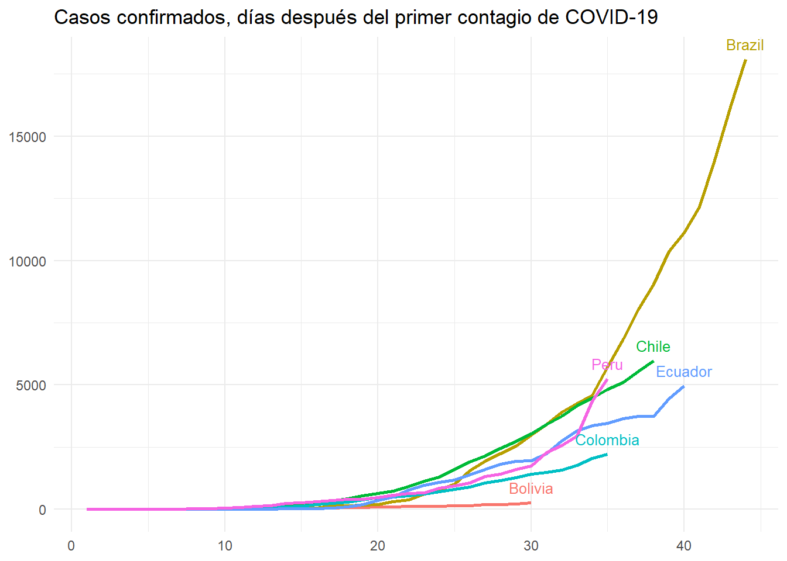
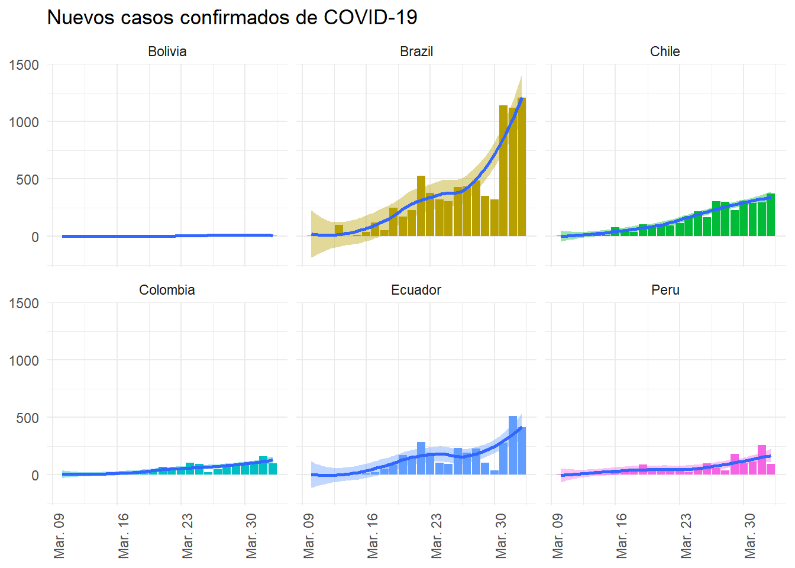
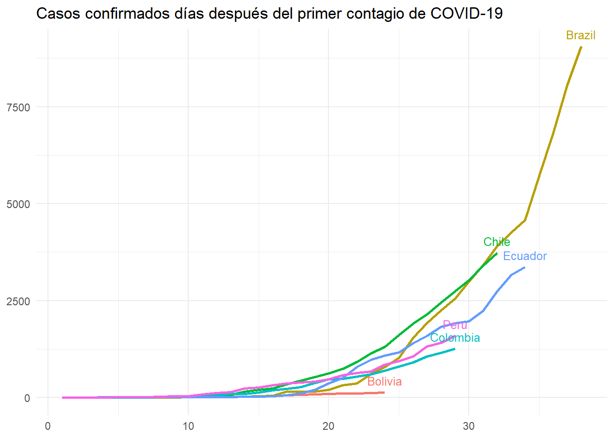
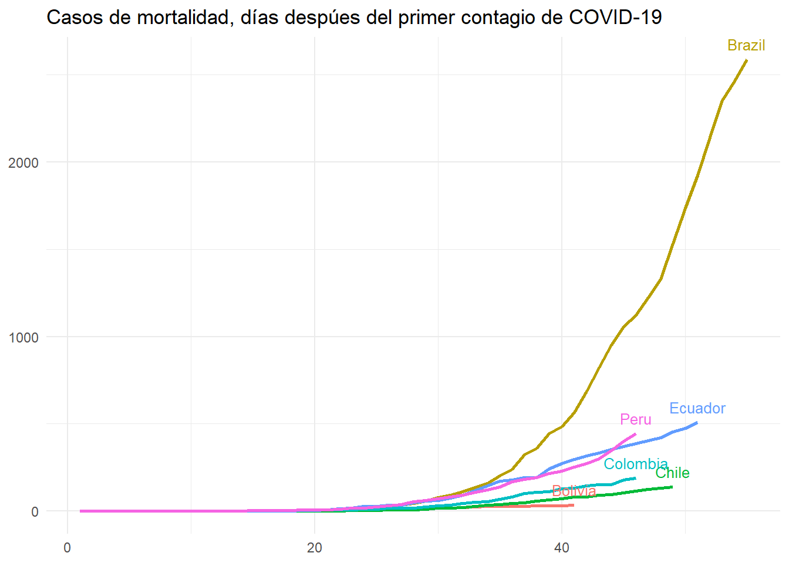
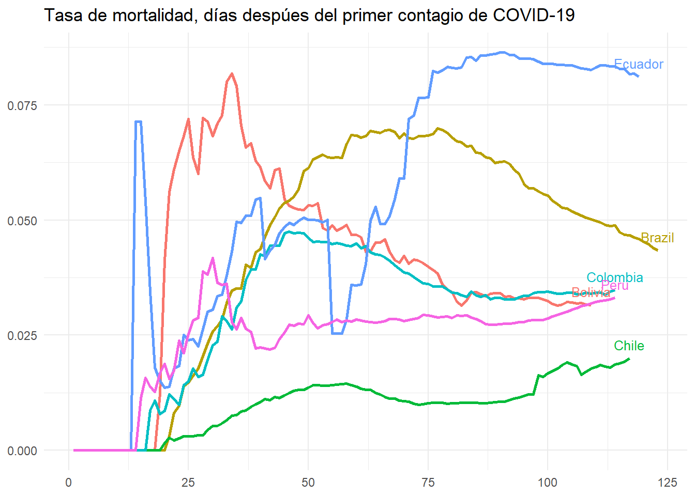
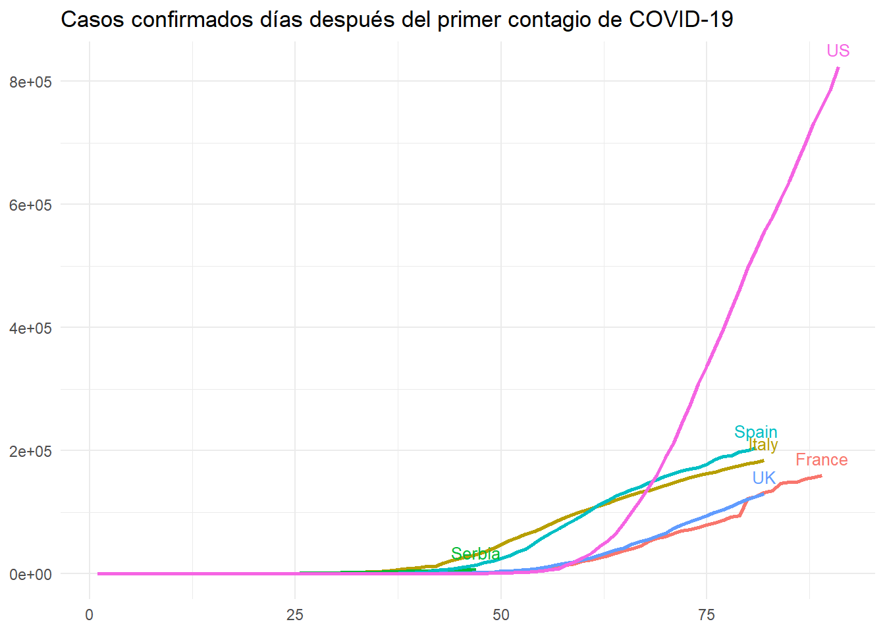
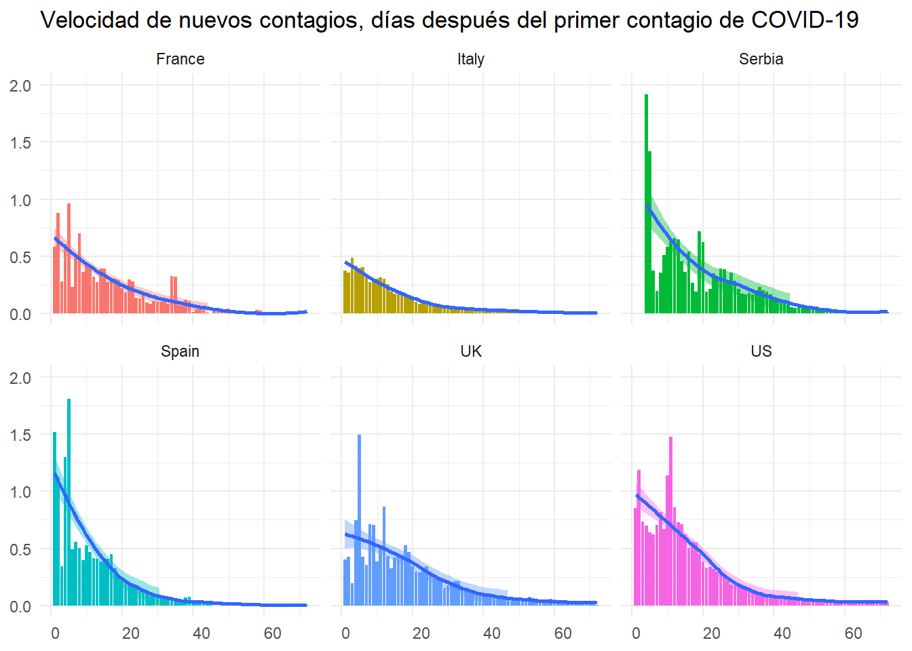
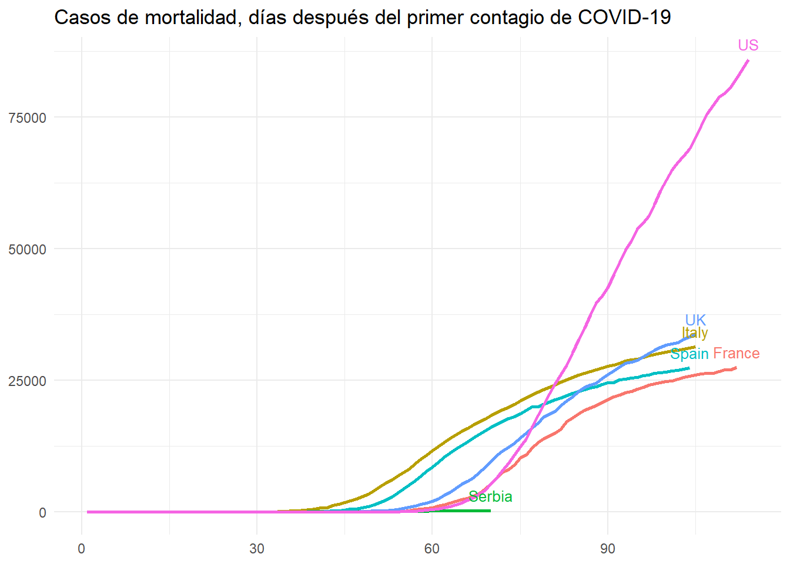
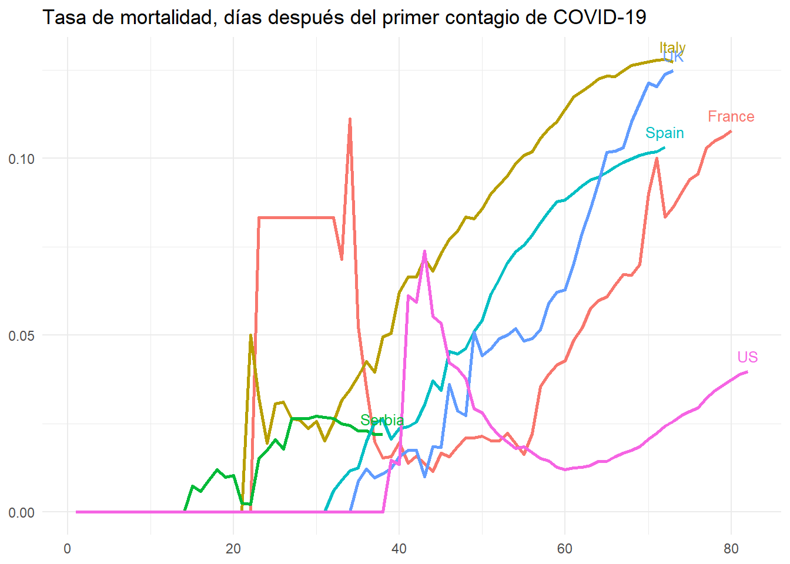

JD Website
Jorge David Morales
2020-04-23
COVID-19
Información tomada del GitHub de la Universidad Johns Hopkins, US:
https://github.com/CSSEGISandData/COVID-19/tree/master/csse_covid_19_data
## [1] "Fecha de último reporte: 2020-04-22"—————————————————————————————-
COVID-19 en la Región
—————————————————————————————-
| Report.Date | Country.Region | Confirmed | Recovered | Recov.Rate | Deaths | Death.Rate | Actives |
|---|---|---|---|---|---|---|---|
| 2020-04-22 | Brazil | 45,757 | 25,318 | 55.3% | 2,906 | 6.35% | 17,533 |
| 2020-04-22 | Peru | 19,250 | 7,027 | 36.5% | 530 | 2.75% | 11,693 |
| 2020-04-22 | Chile | 11,296 | 5,386 | 47.7% | 160 | 1.42% | 5,750 |
| 2020-04-22 | Ecuador | 10,850 | 1,262 | 11.6% | 537 | 4.95% | 9,051 |
| 2020-04-22 | Colombia | 4,356 | 870 | 20.0% | 206 | 4.73% | 3,280 |
| 2020-04-22 | Bolivia | 609 | 44 | 7.22% | 37 | 6.08% | 528 |
| Report.Date | Country.Region | Confirmed | New.Cases | Two.days.var | Five.days.var | New.Deaths | Deaths.var |
|---|---|---|---|---|---|---|---|
| 2020-04-22 | Brazil | 45,757 | 2,678 | 12.3% | 35.9% | 165 | 6.02% |
| 2020-04-22 | Peru | 19,250 | 1,413 | 17.9% | 42.7% | 46 | 9.50% |
| 2020-04-22 | Chile | 11,296 | 464 | 7.51% | 22.1% | 13 | 8.84% |
| 2020-04-22 | Ecuador | 10,850 | 452 | 7.13% | 28.4% | 17 | 3.27% |
| 2020-04-22 | Colombia | 4,356 | 207 | 9.53% | 26.7% | 10 | 5.10% |
| 2020-04-22 | Bolivia | 609 | 11 | 7.98% | 31.0% | 3 | 8.82% |


Tasa de variación de los casos acumulados en dos días. En el peor de los escenarios, un valor de 1
es indicativo de que cada dos días se duplican los casos confirmados.

Se estima que cuando la tasa de aceleración (Rolling Mean 6 days) empiece a ser negativa, habremos alcanzado
el pico de contagios y la curva de nuevos casos empezaría a descender.


—————————————————————————————-
COVID-19 en el mundo
—————————————————————————————-
| Report.Date | Country.Region | Confirmed | Recovered | Recov.Rate | Deaths | Death.Rate | Actives |
|---|---|---|---|---|---|---|---|
| 2020-04-22 | US | 840,351 | 77,366 | 9.21% | 46,622 | 5.55% | 716,363 |
| 2020-04-22 | Spain | 208,389 | 85,915 | 41.2% | 21,717 | 10.4% | 100,757 |
| 2020-04-22 | Italy | 187,327 | 54,543 | 29.1% | 25,085 | 13.4% | 107,699 |
| 2020-04-22 | France | 157,125 | 41,326 | 26.3% | 21,373 | 13.6% | 94,426 |
| 2020-04-22 | UK | 134,638 | 683 | 0.510% | 18,151 | 13.5% | 115,804 |
| 2020-04-22 | Serbia | 6,630 | 870 | 13.1% | 125 | 1.89% | 5,635 |
| Report.Date | Country.Region | Confirmed | New.Cases | Two.days.var | Five.days.var | New.Deaths | Deaths.var |
|---|---|---|---|---|---|---|---|
| 2020-04-22 | US | 840,351 | 28,486 | 7.14% | 20.1% | 2,178 | 4.90% |
| 2020-04-22 | Spain | 208,389 | 4,211 | 4.09% | 9.20% | 435 | 2.04% |
| 2020-04-22 | Italy | 187,327 | 3,370 | 3.37% | 8.64% | 437 | 1.77% |
| 2020-04-22 | France | 157,125 | -2,172 | 0.412% | 5.36% | 544 | 2.61% |
| 2020-04-22 | UK | 134,638 | 4,466 | 6.98% | 22.7% | 773 | 4.45% |
| 2020-04-22 | Serbia | 6,630 | 0 | 0% | 16.5% | 0 | 0% |


Tasa de variación de los casos acumulados en dos días. En el peor de los escenarios, un valor de 1
es indicativo de que cada dos días se duplican los casos confirmados.

Se estima que cuando la tasa de aceleración (Rolling Mean 6 days) empiece a ser negativa, habremos alcanzado
el pico de contagios y la curva de nuevos casos empezaría a descender.

